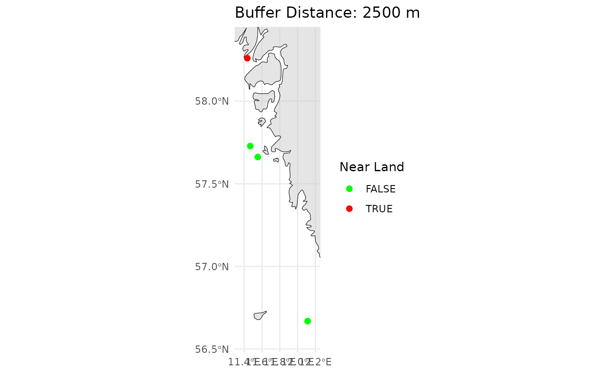

Introduction
This vignette provides an overview of quality control (QC) methods
for Imaging FlowCytobot (IFCB) data using the iRfcb
package. The package offers tools to analyze Particle Size Distribution
(PSD) following Hayashi et al. in prep, verify geographical
positions, and integrate contextual data from sources like ferrybox
systems. These QC workflows ensure high-quality datasets for
phytoplankton and microzooplankton monitoring in marine ecosystems.
You’ll learn how to:
- Set up the
iRfcbpackage andPythonenvironment. - Analyze particle size distributions for data quality.
- Check spatial metadata for proximity to land, basin classification, and missing positions.
Follow this tutorial to streamline the QC process and ensure reliable IFCB data.
Getting Started
Installation
You can install the package from CRAN using:
install.packages("iRfcb")Some functions from the iRfcb package used in this
tutorial require Python to be installed. You can download
Python from the official website: python.org/downloads.
The iRfcb package can be configured to automatically
activate an installed Python virtual environment (venv) upon loading by
setting an environment variable. For more details, please refer to the
package README.
Load the iRfcb library:
Download Sample Data
To get started, download sample data from the SMHI IFCB Plankton Image Reference Library (Torstensson et al. 2024) with the following function:
# Define data directory
data_dir <- "data"
# Download and extract test data in the data folder
ifcb_download_test_data(
dest_dir = data_dir,
max_retries = 10,
sleep_time = 30,
verbose = FALSE
)Particle Size Distribution
IFCB data can be quality controlled by analyzing the particle size
distribution (PSD) (Hayashi et al. in prep). iRfcb uses the
code available at https://github.com/kudelalab/PSD,
which is efficient in detecting samples with bubbles, beads, incomplete
runs etc. Before running the PSD quality check, ensure the necessary
Python environment is set up and activated:
# Define path to virtual environment
env_path <- "~/.virtualenvs/iRfcb" # Or your preferred venv path
# Install python virtual environment
ifcb_py_install(envname = env_path)
# Run PSD quality control
psd <- ifcb_psd(
feature_folder = "data/features/2023",
hdr_folder = "data/data/2023",
save_data = FALSE,
output_file = NULL,
plot_folder = NULL,
use_marker = FALSE,
start_fit = 10,
r_sqr = 0.5,
beads = 10 ** 12,
bubbles = 150,
incomplete = c(1500, 3),
missing_cells = 0.7,
biomass = 1000,
bloom = 5,
humidity = 70
)The results can be printed and visualized through plots:
# Print output from PSD
head(psd$fits)## # A tibble: 5 × 8
## sample a k R.2 max_ESD_diff capture_percent bead_run humidity
## <chr> <dbl> <dbl> <dbl> <int> <dbl> <lgl> <dbl>
## 1 D20230314T… 5.90e 5 -1.88 0.713 3 0.955 FALSE 16.0
## 2 D20230314T… 2.51e 5 -1.60 0.702 3 0.944 FALSE 16.0
## 3 D20230810T… 3.36e 7 -2.73 0.955 4 0.919 FALSE 65.4
## 4 D20230915T… 1.32e10 -5.54 0.989 2 0.967 FALSE 71.5
## 5 D20230915T… 4.39e10 -6.03 0.981 3 0.961 FALSE 71.5
head(psd$flags)## # A tibble: 2 × 2
## sample flag
## <chr> <chr>
## 1 D20230915T091133 High Humidity
## 2 D20230915T093804 High Humidity
# Plot PSD of the first sample
plot <- ifcb_psd_plot(
sample_name = psd$data$sample[1],
data = psd$data,
fits = psd$fits,
start_fit = 10
)
# Print the plot
print(plot)
Geographical QC/QA
Check If IFCB Is Near Land
To determine if the IFCB is near land (i.e. ship in harbor), examine
the position data in the .hdr files (or from vectors of
latitudes and longitudes):
# Read HDR data and extract GPS position (when available)
gps_data <- ifcb_read_hdr_data(
"data/data/",
gps_only = TRUE,
verbose = FALSE # Do not print progress bar
)
# Create new column with the results
gps_data$near_land <- ifcb_is_near_land(
gps_data$gpsLatitude,
gps_data$gpsLongitude,
distance = 100, # 100 meters from shore
shape = NULL # Using the default NE 1:10m Land Polygon
)
# Print output
head(gps_data)## sample gpsLatitude gpsLongitude timestamp
## 1 D20220522T000439_IFCB134 NA NA 2022-05-22 00:04:39
## 2 D20220522T003051_IFCB134 NA NA 2022-05-22 00:30:51
## 3 D20220712T210855_IFCB134 NA NA 2022-07-12 21:08:55
## 4 D20220712T222710_IFCB134 NA NA 2022-07-12 22:27:10
## 5 D20230314T001205_IFCB134 56.66883 12.11303 2023-03-14 00:12:05
## 6 D20230314T003836_IFCB134 56.66884 12.11302 2023-03-14 00:38:36
## date year month day time ifcb_number near_land
## 1 2022-05-22 2022 5 22 00:04:39 IFCB134 NA
## 2 2022-05-22 2022 5 22 00:30:51 IFCB134 NA
## 3 2022-07-12 2022 7 12 21:08:55 IFCB134 NA
## 4 2022-07-12 2022 7 12 22:27:10 IFCB134 NA
## 5 2023-03-14 2023 3 14 00:12:05 IFCB134 FALSE
## 6 2023-03-14 2023 3 14 00:38:36 IFCB134 FALSE
# Alternatively, you can choose to plot the points on a map
near_land_plot <- ifcb_is_near_land(
gps_data$gpsLatitude,
gps_data$gpsLongitude,
distance = 2500, # 2500 meters from shore
plot = TRUE,
)
# Print the plot
print(near_land_plot)
For more accurate determination, a detailed coastline
.shp file may be required (e.g. the EEA
Coastline Polygon). Refer to the help pages of
ifcb_is_near_land() for further information.
Check Which Sub-Basin an IFCB Sample Is From
To identify the specific sub-basin of the Baltic Sea (or using a custom shape-file) from which an IFCB sample was collected, analyze the position data:
# Define example latitude and longitude vectors
latitudes <- c(55.337, 54.729, 56.311, 57.975)
longitudes <- c(12.674, 14.643, 12.237, 10.637)
# Check in which Baltic sea basin the points are in
points_in_the_baltic <- ifcb_which_basin(latitudes, longitudes, shape_file = NULL)
# Print output
print(points_in_the_baltic)## [1] "13 - Arkona Basin" "12 - Bornholm Basin" "16 - Kattegat"
## [4] "17 - Skagerrak"
# Plot the points and the basins
ifcb_which_basin(latitudes, longitudes, plot = TRUE, shape_file = NULL)
This function reads a pre-packaged shapefile of the Baltic Sea,
Kattegat, and Skagerrak basins from the iRfcb package by
default, or a user-supplied shapefile if provided. The shapefiles
provided in iRfcb originate from SHARK.
Check If Positions Are Within the Baltic Sea or Elsewhere
This check is useful if only you want to apply a classifier specifically to phytoplankton from the Baltic Sea.
# Define example latitude and longitude vectors
latitudes <- c(55.337, 54.729, 56.311, 57.975)
longitudes <- c(12.674, 14.643, 12.237, 10.637)
# Check if the points are in the Baltic Sea Basin
points_in_the_baltic <- ifcb_is_in_basin(latitudes, longitudes)
# Print results
print(points_in_the_baltic)## [1] TRUE TRUE FALSE FALSE
# Plot the points and the basin
ifcb_is_in_basin(latitudes, longitudes, plot = TRUE)This function reads a land-buffered shapefile of the Baltic Sea Basin
from the iRfcb package by default, or a user-supplied
shapefile if provided.
Find Missing Positions from RV Svea Ferrybox
This function is used by SMHI to collect and match stored ferrybox
positions when they are not available in the .hdr files. An
example ferrybox data file is provided in iRfcb with data
matching sample D20220522T000439_IFCB134.
# Print available coordinates from .hdr files
head(gps_data, 4)## sample gpsLatitude gpsLongitude timestamp
## 1 D20220522T000439_IFCB134 NA NA 2022-05-22 00:04:39
## 2 D20220522T003051_IFCB134 NA NA 2022-05-22 00:30:51
## 3 D20220712T210855_IFCB134 NA NA 2022-07-12 21:08:55
## 4 D20220712T222710_IFCB134 NA NA 2022-07-12 22:27:10
## date year month day time ifcb_number near_land
## 1 2022-05-22 2022 5 22 00:04:39 IFCB134 NA
## 2 2022-05-22 2022 5 22 00:30:51 IFCB134 NA
## 3 2022-07-12 2022 7 12 21:08:55 IFCB134 NA
## 4 2022-07-12 2022 7 12 22:27:10 IFCB134 NA
# Define path where ferrybox data are located
ferrybox_folder <- "data/ferrybox_data"
# Get GPS position from ferrybox data
positions <- ifcb_get_ferrybox_data(gps_data$timestamp,
ferrybox_folder)
# Print result
head(positions)## # A tibble: 6 × 3
## timestamp gpsLatitude gpsLongitude
## <dttm> <dbl> <dbl>
## 1 2022-05-22 00:04:39 55.0 13.6
## 2 2022-05-22 00:30:51 NA NA
## 3 2022-07-12 21:08:55 NA NA
## 4 2022-07-12 22:27:10 NA NA
## 5 2023-03-14 00:12:05 NA NA
## 6 2023-03-14 00:38:36 NA NAFind Contextual Ferrybox Data from RV Svea
The ifcb_get_ferrybox_data() function can also be used
to extract additional ferrybox parameters, such as temperature
(parameter number 8180) and salinity (parameter number
8181).
# Get salinity and temperature from ferrybox data
ferrybox_data <- ifcb_get_ferrybox_data(gps_data$timestamp,
ferrybox_folder,
parameters = c("8180", "8181"))
# Print result
head(ferrybox_data)## # A tibble: 6 × 3
## timestamp `8180` `8181`
## <dttm> <dbl> <dbl>
## 1 2022-05-22 00:04:39 11.4 7.86
## 2 2022-05-22 00:30:51 NA NA
## 3 2022-07-12 21:08:55 NA NA
## 4 2022-07-12 22:27:10 NA NA
## 5 2023-03-14 00:12:05 NA NA
## 6 2023-03-14 00:38:36 NA NAThis concludes this tutorial for the iRfcb package. For
additional guides—such as data sharing and MATLAB integration—please
refer to the other tutorials available on the project’s webpage. See how
data pipelines can be constructed using iRfcb in the
following Example
Project. Happy analyzing!
Citation
## To cite package 'iRfcb' in publications use:
##
## Anders Torstensson (2025). iRfcb: Tools for Managing Imaging
## FlowCytobot (IFCB) Data. R package version 0.5.1.
## https://CRAN.R-project.org/package=iRfcb
##
## A BibTeX entry for LaTeX users is
##
## @Manual{,
## title = {iRfcb: Tools for Managing Imaging FlowCytobot (IFCB) Data},
## author = {Anders Torstensson},
## year = {2025},
## note = {R package version 0.5.1},
## url = {https://CRAN.R-project.org/package=iRfcb},
## }References
- Hayashi, K., Walton, J., Lie, A., Smith, J. and Kudela M. Using particle size distribution (PSD) to automate imaging flow cytobot (IFCB) data quality in coastal California, USA. In prep.
- Torstensson, A., Skjevik, A-T., Mohlin, M., Karlberg, M. and Karlson, B. (2024). SMHI IFCB Plankton Image Reference Library. SciLifeLab. Dataset. https://doi.org/10.17044/scilifelab.25883455.v3